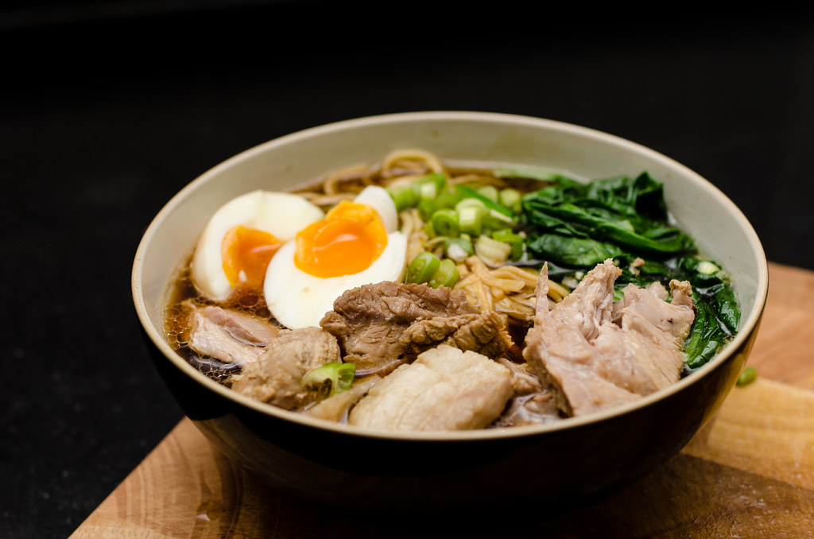

Tonkatsu Shoyu Ramen recipe

Who wouldn't want to eat this baby?
I've been living in Japan for about three years now and have become spoiled by the quality of ramen here. I mean, this is the country where the food comes from, so that makes perfect sense, right?
This recipe saves you the $1,000+ flight fare so that you can enjoy ramen from the comforts of your home.
This a Shoyu-style ramen, which means it is soy sauce-based. We added tonkatsu, panko-breaded fried pork, for extra Japanesey-ness. Serves 1.
Ingredients
- 1 large egg
- 1 and half tsps spicy sesame oil
- 2 1x3-inch boneless pork chop slices
- 2 tablespoons olive oil, divided
- 1 tablespoon black sesame seeds, divided
- 2 leaves fresh basil, chopped, divided
- 1 leaf fresh sage, chopped, divided
- 1 3oz package instant ramen noodles, seasoning packet discarded
- 1 and 3/4 tablespoons bonito soup stock
- 1 and 3/4 tablespoons soy sauce
- 1/2 teaspoon white miso paste with dashi
Toppings
- 4 1/3-inch slices Naruto, fish paste stick
- 1 tablespoon tonkatsu sauce
- 1 tablespoon sushi ginger, finely chopped
- 1 green onion, thinly sliced
- 1 pinch ground black pepper
Instructions
- Fill a small pot halfway with water. Bring to a boil; add egg and cook in boiling water for 15 minutes. Drain, run cold water over egg, and set aside to cool.
- Pour sesame oil into a large skillet and lay pork slices in oil. Cover pork with 1 tablesoon olive, 1/2 tablespoon sesame seeds, 1/2 of the basil, and 1/2 of the sage.
Flip and cover pork with these remaning ingredients: 1 tablespoon olive oil, 1/2 tablespoon sesame seeds, basil, and sage.
- Cook pork, covered, over medium-low heat, until evenly browned on the bottom. This takes about 5 minutes. Flip and continue cooking until the second side is browned as well, then remove from heat.
- Bring a large pot of water to a boil. Cook ramen noodles in boiling water until tender, about 3 minutes. Drain in a colander set in the sink; rinse noodles until water runs clear.
Return noodles to the pot.
- Sitr kombu, bonito stock, soy sauce, and miso paste into noodles. Cook, stiring with chopsticks, over medium heat, until miso paste is disolved. This takes about 3 to 5 minutes.
Transfer noodles to a serving bowl.
- Peel and cut egg in half length-wise. Place egg, pork slices, and Naruto slices over noodles. Garnish with tonkatsu sauce, ginger, green onion, and black pepper.
- Serve to loved ones and enjoy!
All recipes